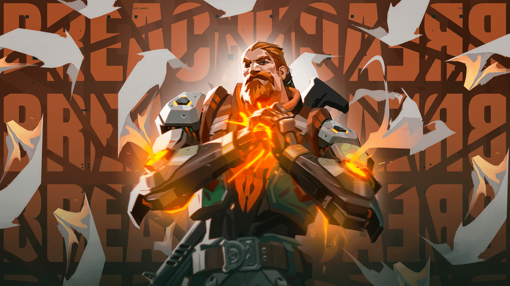

Ability 1(Aftershock)-This ability is a fire charge that can be shot through walls.There will be a circle that shows the radius of the ability.Anybody who is on the other side of the wall gets damaged and can even die,if the aftershocks circle is red on ur screen and u cannot release that,that means something is blocking the wall,if the aftershocks circle is green then u can release it.U can try this in the range.
Ability 2(faultline)-This ability is a concuss that goes through walls,there is a crack on the ground that shows the area people get concussed if they are in the area,u can shoot this through any wall.U can increase the length of the concuss by pressing. right click
Ability 3(flashpoint)-This ability is a flash that u can put through walls,the duration of flash is 2 seconds.The enemies do not get flashed if the they are not facing the flash.I cannot explain this perfectly in words.
Ultimate(rolling thunder)-This ability is a concuss like faultline but with a bigger concuss area and more concussing duration and also the players get launched into the air and they can only single fire and not spray,but u can counter this by aiming for the head if u have a vandal.Ur teamates can also get concussed.U can see the area of the concuss in ur map.Even if jett updrafts in the air she will get concuss but jett can dash out of